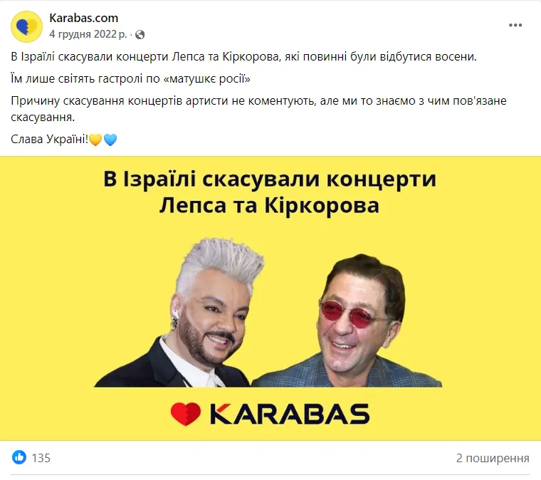
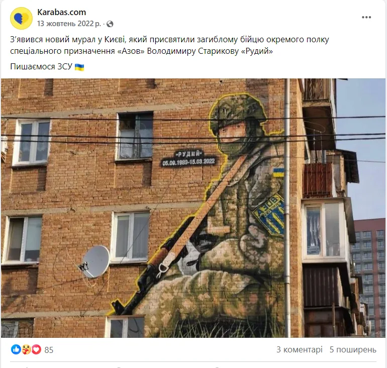
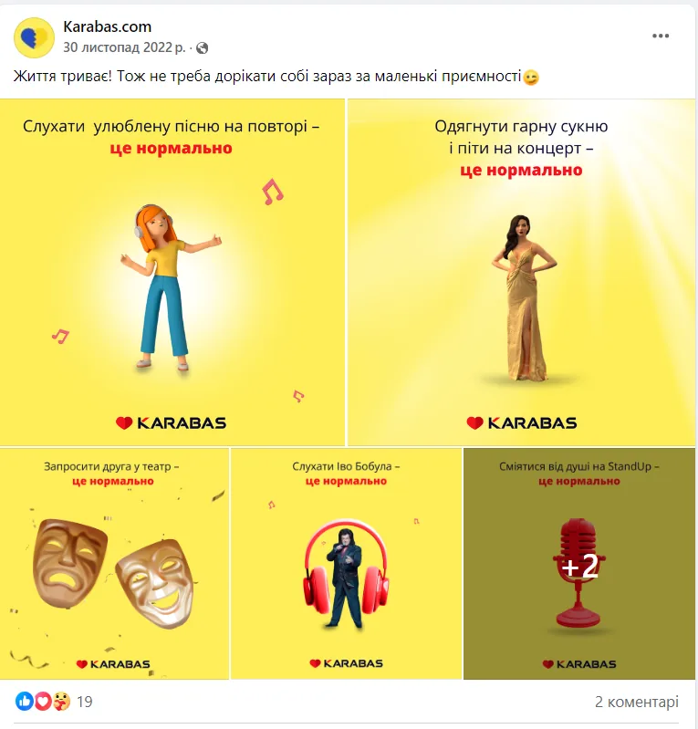
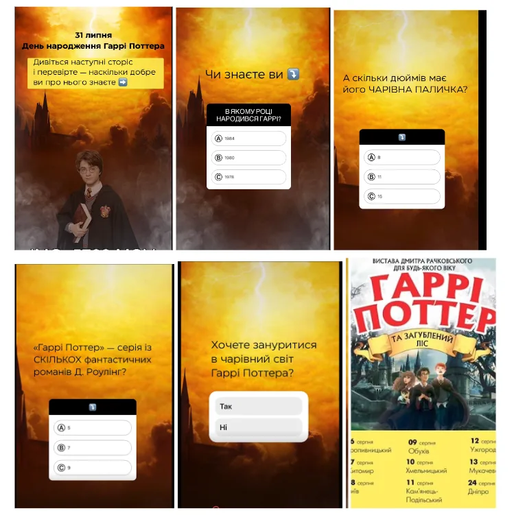

Період роботи: травень 2022 – березень 2023
Мета: підтримати впізнаваність бренду у період повномасштабної війни, показати, що компанія продовжує працювати, та збільшити охоплення і взаємодію в соцмережах без активних подій на ринку.
Основні задачі:
- Заявити: «Ми працюємо попри все».
- Підтримати культурну єдність через соцмережі.
- Впровадити позитивний, підтримуючий і розважальний контент.
- Адаптувати комунікацію до нових реалій війни
(менше івентів — більше цінностей, емоцій, взаємодії).

/інструменти та методи
Контент-стратегія:
Підтримка та залучення: історії про підтримку України від зірок, мурали на честь ЗСУ, підтримка театрів.
Розваги: пісенні гороскопи, музичні ігри, рубрика «Це нормально» про події під час війни.
Освітній контент: як готуватись до блекауту, як відвідати концерт без стресу.
Продажі: добірки подій, анонси, заклики до дії.
Слоган: «Життя триває!» – як ключове повідомлення на банерах і в дописах.


/Stories як окремий інструмент:
Запроваджено постійний формат Stories з рубриками:
- святкові інтерактиви,
- загадки/опитування,
- інформування (як купити квиток, в яких містах івенти),
- анонси,
- брендоване оформлення.

Зростання кількості Stories:
з 48/міс (травень 2022) → до 200/міс (квітень 2023)
Реклама:
У другому етапі запущена таргетована реклама:
- на підписників,
- на лідогенерацію,
- на промо окремих публікацій.
Результати:
- Facebook:
Охоплення: з 52 тис. → до майже 2 млн (+3846%)
Взаємодії: з 1 тис. → до 35 тис. (+3500%)
- Instagram:
Охоплені акаунти: з 17 тис. → до 1 млн (+588%)
Акаунти, що взаємодіяли: з 2 тис. → до 17 тис. (+850%)
Загальна взаємодія з контентом: з 3 тис. → до 23 тис. (+733%)
Чому це спрацювало:
- Актуалізація контенту під емоційні потреби аудиторії під час війни.
- Постійна адаптація тем і форматів.
- Сильна емоційна рамка (життя, підтримка, музика, культура).
- Регулярність, системність і гнучке використання Stories.
- Вдале поєднання інформаційної, розважальної та освітньої функції.